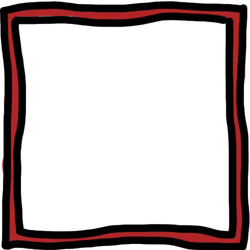

Slot Machine
Find Out More
Robot
Find Out More

As mentioned, this is my web3d coursework submission. Here you'll find 3 distinct 3d models all made in Blender and more importantly all of the process was recorded. Click find out more next to each of the model highlights below to be taken to a dedicated page about the model where you can also watch the timelapse.
A bit more about the site as a whole. I've made probably over a hundred different websites in my time - meaning I'm very confident in doing so, however i've always wanted to learn 3d modelling but never did. So i took this module as an opportunity to have fun with the website whilst learning 3d modelling hence all the weird cartoon-y graphics and animations. I appreciate the look and feel of the website might not be as smooth or UX efficient but that's not the point.
One of the key points of my submission is that all of the CSS and styling is written in pure CSS no frameworks. I think for modules like this CSS should be taught to an extent instead of pushing bootstrap as it pushes conformity in what i'd say an expressive module - but that's just my opinion and i've done alot of CSS.
Writing this site was alot of fun - i already had a threeJS template that i made for previous projects so used that as it uses TypeScript along with ThreeJS which greatly improves the development process with autocomplete and in editor type checking.
As mentioned above, each model has its own page with a recording timelapse at 2000% original speed showing the whole process of modelling, then each page was developed as a template.
Finally there is the Arcade Scene, featuring a sound visualiser (because why not) and a scene containing all the models.